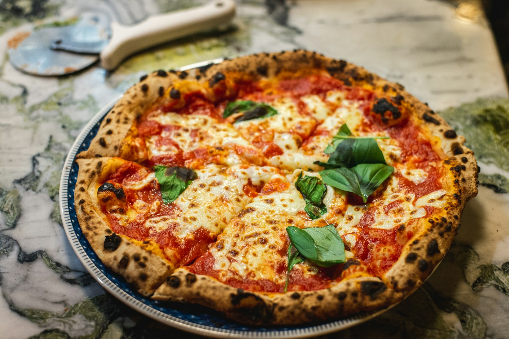

IL RISTORANTE
A tavola, ad Aprilia.
Da Le Isole la pizza incontra la cucina di mare e di terra. In via Isole, la sala in stile baita accoglie le tavolate di famiglia e le cene tra amici. Nella bella stagione ci si ritrova anche in giardino.

Il profumo del forno a legna e il piacere di stare a tavola.
Benvenuti da Le Isole, pizzeria e ristorante ad Aprilia.
Da Le Isole la pizza incontra la cucina di mare e di terra. In via Isole, la sala in stile baita accoglie le tavolate di famiglia e le cene tra amici. Nella bella stagione ci si ritrova anche in giardino.
Fotografie dal menu di Le Isole. Altri scatti su Instagram ↗
Per il pranzo in settimana e i festivi, chiama per conferma.
Via Isole 30, 04011 Aprilia (LT)
06 925 8015